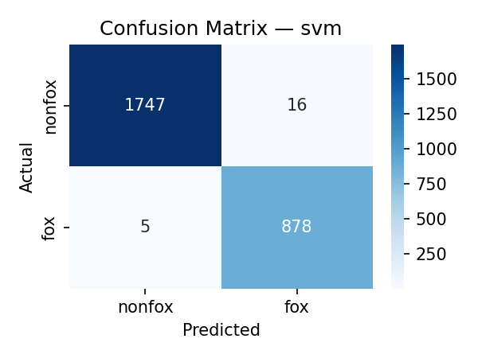
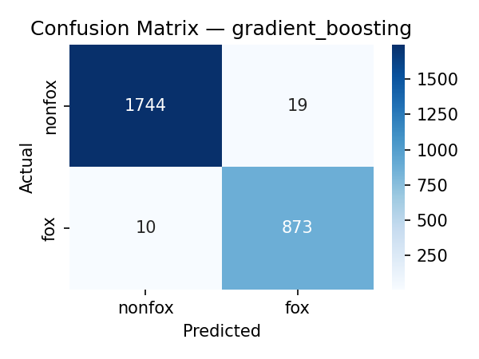
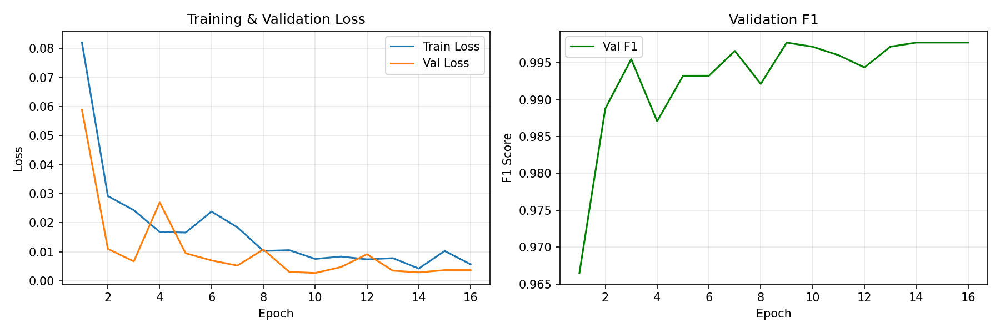
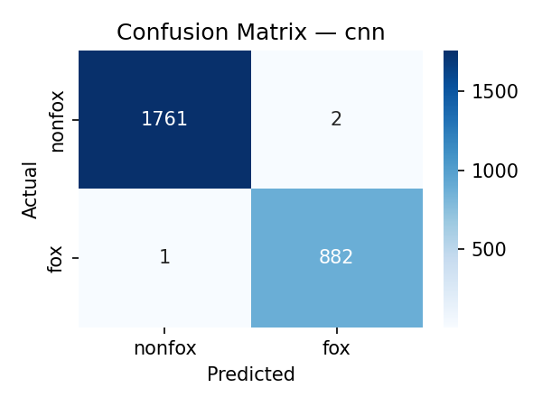
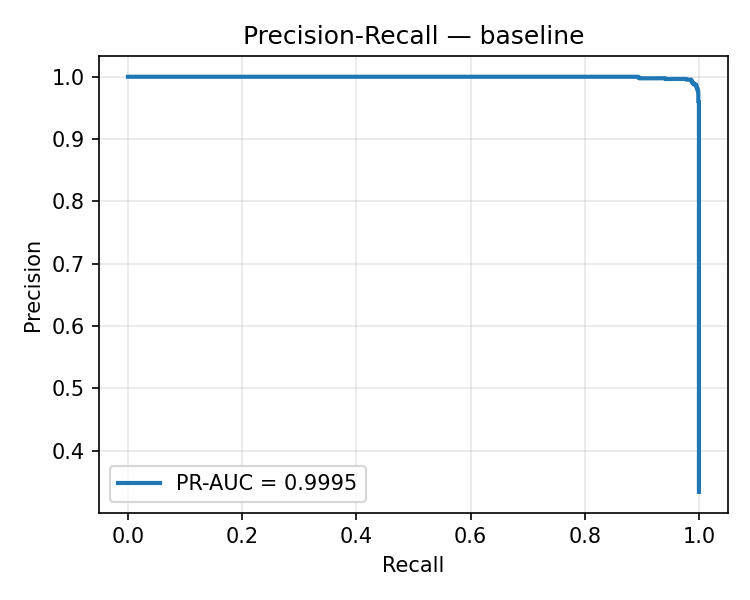
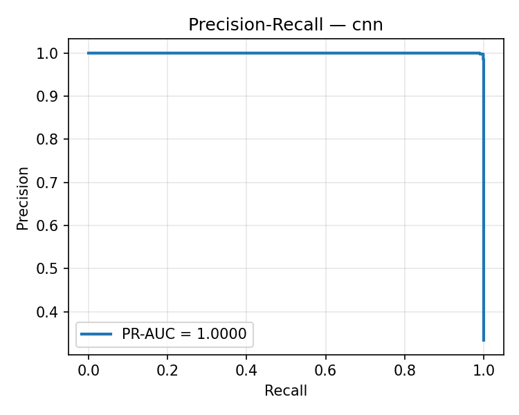
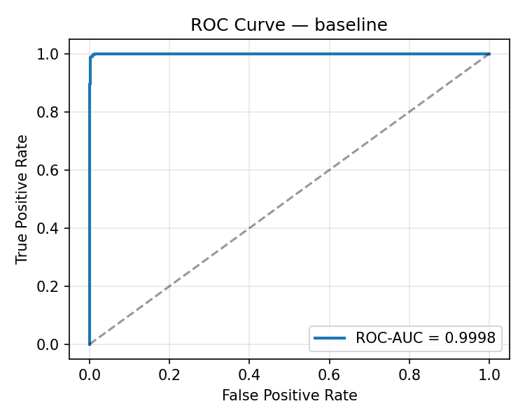
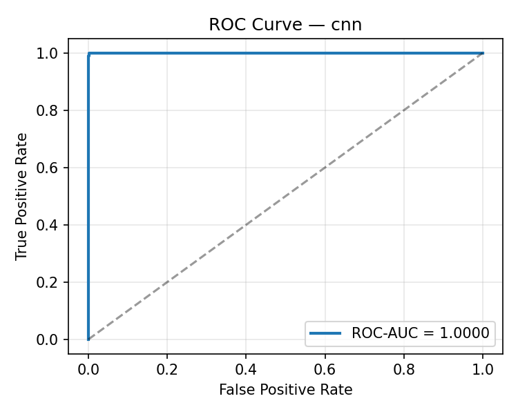
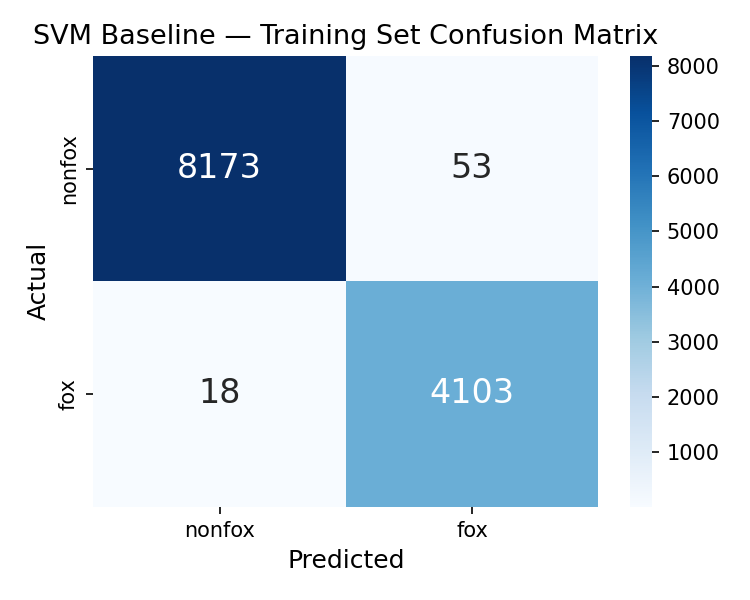
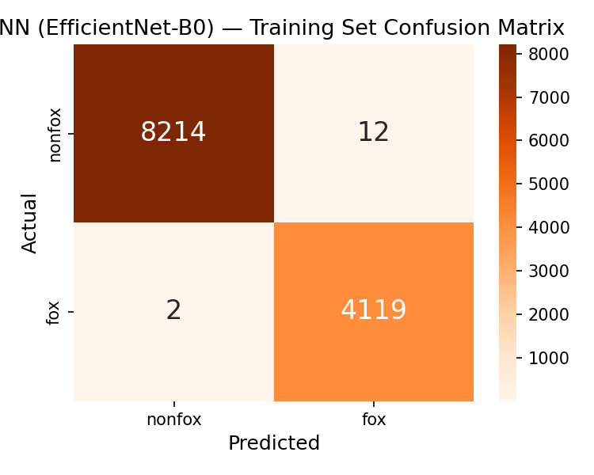

Binary audio classification for red fox (Vulpes vulpes) vocalisation detection using DSP + ML
End-to-end pipeline from raw audio to real-time detection
Audio recordings from Xeno-canto API v3. Fox vocalisations (quality A+B) and non-fox sounds (European birds + mammals).
Fixed-length segmentation (3s clips, 0.5s overlap), MFCC extraction (40 coefficients → 80-dim vectors), log-mel spectrogram images (128 bands).
SVM (RBF kernel), Random Forest (200 trees), Gradient Boosting (200 estimators) — all with StandardScaler. Best: SVM.
EfficientNet-B0 (ImageNet pre-trained), fine-tuned with AdamW, CosineAnnealing LR, weighted CrossEntropy, and SpecAugment-style augmentation.
321 recordings → 17,639 segmented clips
| Split | Total | Fox | Non-fox | % of Data |
|---|---|---|---|---|
| Train | 12,347 | ~5,680 | ~6,667 | 70% |
| Validation | 2,646 | ~883 | ~1,763 | 15% |
| Test | 2,646 | 883 | 1,763 | 15% |
Traditional ML baseline vs. deep learning CNN
| Input | 80-dim MFCC feature vector (40 means + 40 stds) |
| Scaler | StandardScaler (zero mean, unit variance) |
| Classifier | SVM with RBF kernel, probability=True |
| Selection | Best of SVM / RF / GB by validation F1 |


| Backbone | EfficientNet-B0 (ImageNet pre-trained) |
| Classifier Head | Dropout(0.3) → Linear(1280, 2) |
| Optimiser | AdamW (lr=1e-3, weight_decay=1e-4) |
| Scheduler | CosineAnnealingLR (T_max=30) |
| Loss | Weighted CrossEntropyLoss (inverse-frequency) |
| Early Stopping | Patience = 7 (by val F1) |
| Image Size | 128 × 128 |
| Augmentation | HFlip, FreqMask(20), TimeMask(20), GaussNoise(0.01) |
| Best Epoch | 9 / 16 (early stopped) |
| Best Val F1 | 0.9977 |

Evaluation on 2,646 held-out test clips (15%)





Side-by-side performance on the test set
| Metric | Baseline SVM | CNN (EfficientNet-B0) | Δ (CNN − Baseline) |
|---|---|---|---|
| Accuracy | 0.9932 | 0.9989 | +0.0057 |
| Precision (macro) | 0.9910 | 0.9986 | +0.0076 |
| Recall (macro) | 0.9938 | 0.9989 | +0.0051 |
| F1 (macro) | 0.9924 | 0.9987 | +0.0063 |
| F1 (weighted) | 0.9932 | 0.9989 | +0.0057 |
| PR-AUC | 0.9995 | 1.0000 | +0.0005 |
| ROC-AUC | 0.9998 | 1.0000 | +0.0002 |
Training vs. test performance — both models show minimal gaps
| Model | Train Accuracy | Test Accuracy | Gap | Train F1 | Test F1 | Gap |
|---|---|---|---|---|---|---|
| SVM Baseline | 0.9942 | 0.9932 | 0.0010 | 0.9935 | 0.9924 | 0.0011 |
| CNN (EfficientNet-B0) | 0.9989 | 0.9989 | 0.0000 | 0.9987 | 0.9987 | 0.0000 |


Both models exhibit near-zero train-test gaps, indicating that neither model is overfitting to the training data. The CNN achieves marginally better generalisation with a 0.0000 gap across all metrics.